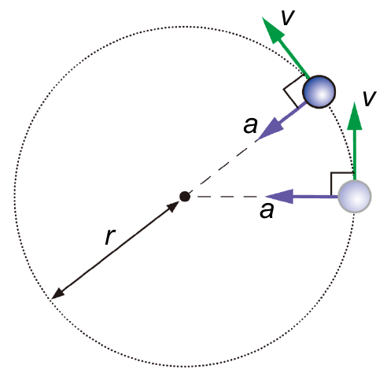
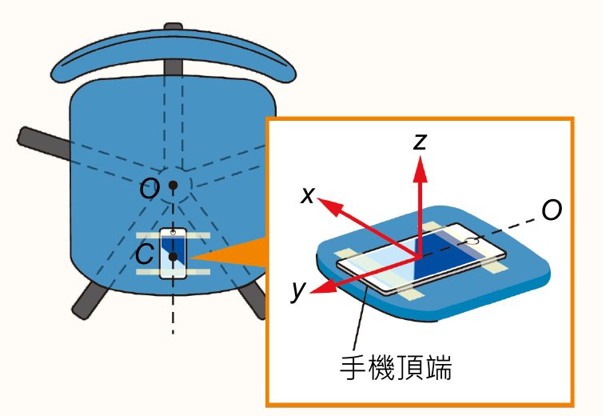
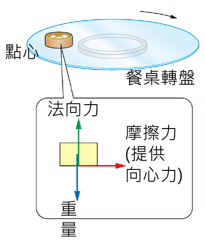
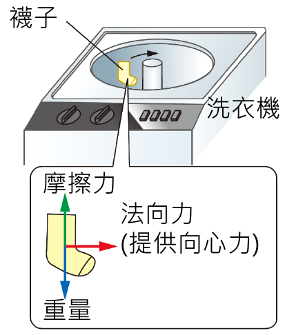
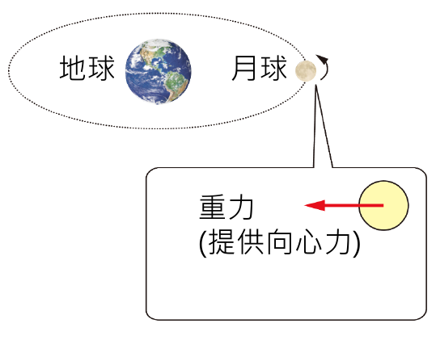
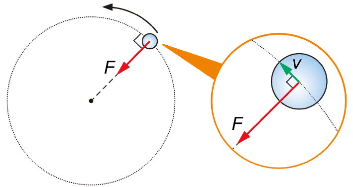
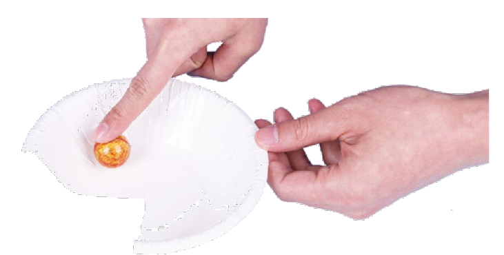
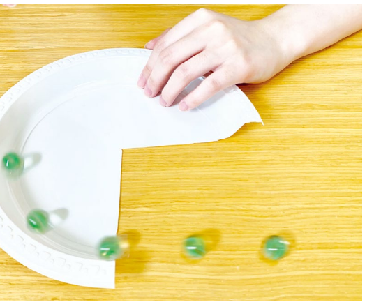

父親拉着兒子的雙手旋轉。
原教材圖
父親覺得兒子好像變得比平時重。
兒子（物體 Y）的隔離體圖｜虛線表示力的分量
向上分量與重量互相平衡，淨力沿水平方向指向圓心。
第 9.2 節
物體以恆定的速率轉圈，
速度方向仍在改變。
v 速度
a 向心加速度
父親拉着兒子的雙手旋轉。
原教材圖
父親覺得兒子好像變得比平時重。
兒子（物體 Y）的隔離體圖｜虛線表示力的分量
向上分量與重量互相平衡，淨力沿水平方向指向圓心。
父親（物體 X）對兒子（物體 Y）施的力和兒子的重量，導致有一道淨力沿水平方向作用於 Y。
該道淨力垂直於 Y 的速度，因此不會對 Y 作功。Y 不會加快或減慢，只會改變移動方向。
如果 Y 持續受這道淨力作用，就會以恆定的線速率沿圓形路徑移動，也就是作勻速圓周運動。這道淨力總是指向路徑的圓心，因此稱為向心力。
俯視圖｜父親 X、兒子 Y
⟶ 移動方向改變
動畫｜俯視勻速圓周運動
物體作勻速圓周運動時，線速率恆定，速度沿切線。
根據牛頓第二定律，加速度的方向與淨力相同。加速度 a 指向路徑的圓心，稱為向心加速度。
物體作勻速圓周運動時，向心加速度的量值為
以 v = rω 代入，可由左式得到右式。

原教材圖｜兩個位置的 v 與 a

原教材圖｜手機固定在旋轉椅上
用膠紙把手機固定在旋轉椅上，讓手機的 y 軸徑向從 O 點指出。轉動椅子，量度向心加速度 a 和角速率 ω。
固定半徑時的關係（示意）
a (m s⁻²)
ω² (rad² s⁻²)
0
斜率為 r
a–ω² 線圖是一條穿過原點的直線。a 與 ω² 成正比。
r 加倍，a 減半。
r 加倍，a 也加倍。
兩式等價。由 v = rω 可見，當 r 改變時，v 和 ω 不能同時固定。
根據牛頓第二定律，向心力的量值為
把 a = v²/r 或 a = rω² 代入 F = ma，便得出兩個向心力的算式。

摩擦力 f

滾筒的法向力 R

地球的重力 F
⟶ 箭嘴所示的力指向圓心，提供物體作勻速圓周運動所需的向心力。向心力是作用於物體的淨力，使物體一直作勻速圓周運動。
物體作勻速圓周運動時，向心力和向心加速度都具有恆定的量值，但它們的方向卻不斷改變。
無論在哪一刻，向心力都與物體的速度互相垂直。

原教材圖｜向心力與速度垂直
v 速度
a 向心加速度
以四分一速度播放
切換固定量時，回到 r = 1.0 m 的比較起點。

小球沿碗壁作圓周運動。向心力由碗壁施加的法向力的水平分量提供。

小球一離開紙碗，這道法向力便立即消失。小球會以剛離開碗子時的方向繼續移動。
動畫｜小球離開圓形路徑的瞬間
小球一離開紙碗，碗壁的法向力便立即消失。
若水平淨力為零，小球由於慣性，會以剛離開碗子時的速率和方向繼續移動，路徑沿切線成一直線。
速度沿切線，向心加速度和向心力指向圓心。
先確定固定的是線速率還是角速率，再比較向心加速度。
撤去向心力後，若水平淨力為零，物體沿切線勻速前進。
原教材｜牛津大學出版社《9.2 向心力與向心加速度》